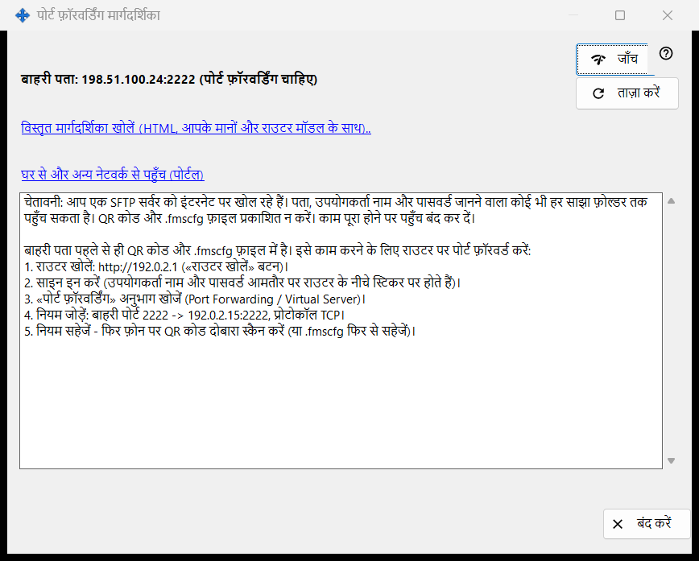
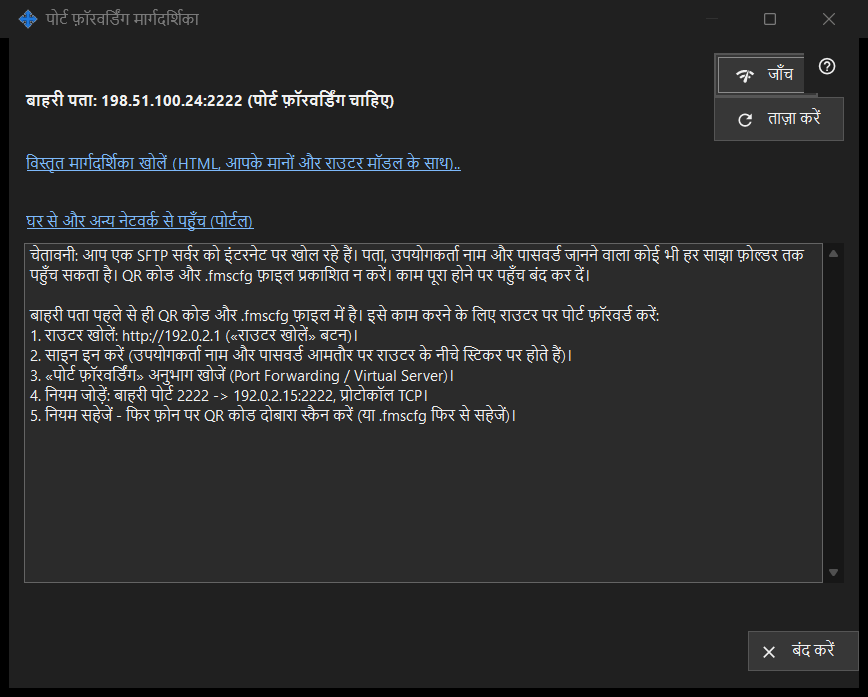

पोर्ट फ़ॉरवर्डिंग मार्गदर्शिका
यह किस लिए है
साझाकरण को आपके घर के नेटवर्क के बाहर से पहुँच योग्य बनाने में मदद करती है। यह बाहरी पता दिखाती है और यह भी कि पोर्ट अपने-आप खुला या राउटर पर फ़ॉरवर्ड करना होगा, और जाँच तथा विस्तृत मार्गदर्शिका देती है। यह मुख्य विंडो के इंटरनेट पहुँच कैसे सेट करें बटन से खुलती है।


इस क्रम में
- पहले साझाकरण शुरू करें; नहीं तो विंडो आपसे कहती है।
- स्थिति की पंक्तियाँ पढ़ें: पहुँच योग्य, CGNAT के पीछे, या पोर्ट फ़ॉरवर्डिंग चाहिए।
- फ़ॉरवर्डिंग चाहिए तो विस्तृत मार्गदर्शिका खोलें और राउटर पर नियम बनाएँ।
- इस पीसी से पते को परखने के लिए जाँच दबाएँ।
- फ़ोन से मोबाइल डेटा पर, उसका Wi-Fi बंद करके, पुष्टि करें।
तत्व
स्थिति
विंडो बाहरी पता पहचानती है और इनमें से एक कहती है: इंटरनेट से उपलब्ध, बाहरी पता: .. (पोर्ट फ़ॉरवर्डिंग चाहिए), बाहरी पता अज्ञात - राउटर में देखें।, या CGNAT के पीछे - बाहर से पहुँच नहीं। जब पोर्ट अपने-आप खुल गया हो (UPnP), तब राउटर की सेटिंग नहीं चाहिए, फिर भी यह चलता है या नहीं, इसकी पुष्टि केवल मोबाइल डेटा वाला फ़ोन कर सकता है। ताज़ा करें पहचान दोहराता है।
राउटर और मार्गदर्शिकाएँ
राउटर की पंक्ति उसका पता दिखाती है, या खोज के दौरान राउटर पहचाना जा रहा है.. दिखाती है। लिंक विस्तृत मार्गदर्शिका खोलें (HTML, आपके मानों और राउटर मॉडल के साथ).. स्थानीय HTML मार्गदर्शिका खोलता है; न खुल पाए तो विंडो यह बताती है। लिंक घर से और अन्य नेटवर्क से पहुँच (पोर्टल) ब्राउज़र में सहायता पोर्टल का संबंधित पृष्ठ खोलता है।
जाँच
बाहरी पते को इस पीसी से परखता है और बताता है: SFTP सर्वर उपलब्ध, पोर्ट खुला है, पर SFTP ने उत्तर नहीं दिया, बंद कनेक्शन (शायद कनेक्शन की सीमा) या कोई उत्तर नहीं। यह निर्णायक नहीं है: कई राउटर अंदर से अपने ही बाहरी पते पर आया अनुरोध ठुकरा देते हैं, इसलिए भरोसेमंद जाँच मोबाइल डेटा पर फ़ोन है।
सुरक्षा
SFTP को इंटरनेट पर खोलने से हर साझा फ़ोल्डर उस हर किसी को मिल जाता है जो पता, लॉगिन और पासवर्ड जान ले। QR कोड या .fmscfg फ़ाइल प्रकाशित न करें और काम पूरा होने पर साझाकरण बंद कर दें। बंद करें विंडो से बाहर निकलता है।
प्रबंधक सेटिंग · SFTP साझाकरण सेटिंग · एक्सचेंज सर्वर सेटिंग